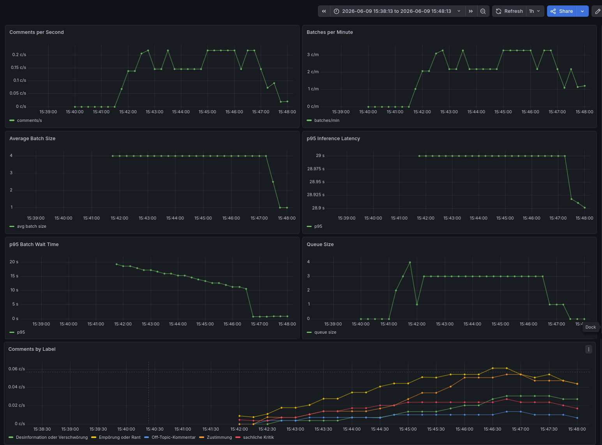

NLP Comment Classification Service
FastAPI service for zero-shot classification of German comments using
MoritzLaurer/DeBERTa-v3-base-mnli-fever-anli.
API
| Method | Path | Description |
|---|---|---|
| POST | /classify |
Submit a comment (non-blocking, returns request_id) |
| GET | /result/{id} |
Poll for the classification result |
| GET | /status |
Check if the inference model has loaded |
POST /classify
{"comment": "Ich habe den Artikel nicht gelesen, aber ich bin trotzdem dagegen."}
{"request_id": "a1b2c3d4-..."}GET /result/{request_id}
// while processing → 404
{"detail": "pending"}
// ready
{"comment": "...", "label": "Empörung oder Rant", "score": 0.72}GET /status
{"status": "ready", "model": "MoritzLaurer/DeBERTa-v3-base-mnli-fever-anli"}
{"status": "loading"}Labels: sachliche Kritik, Zustimmung,
Sarkasmus oder Ironie, Off-Topic-Kommentar,
Empörung oder Rant,
Desinformation oder Verschwörung
Architecture
Client ──POST /classify──▶ api :8000 ──rpush──▶ Redis queue
│
batch worker
(size≥4 │ 30s)
│
POST /predict_batch
│
inference :8001
│
Client ◀──GET /result──── api :8000 ◀──rset──────────┘
Client ◀──GET /status ─── api :8000 ──GET /health ──▶ inferenceMicrobatching implementation
The API layer implements client-side microbatching using a single
background worker thread (batch_worker in
api/main.py). The worker maintains an in-memory
batch_buffer of items that have already been removed from
the Redis queue. It flushes the buffer to the inference server when
either of the two triggers fires:
| Trigger | Condition | Typical load behaviour |
|---|---|---|
| Batch size | 4 items accumulated | Occurs when the queue is keeping up |
| Timeout | 30 seconds since the oldest buffered item | Occurs at low load or idle → prevents a single comment from waiting indefinitely |
The flow at the worker level is:
- Orphan recovery on startup — Every
PROCESSINGitem from a previous crash is moved back to the queue withRPOP → LPUSH. - Requeue retries — Items in the
RETRYsorted set whose exponential backoff has elapsed are moved back to the queue. - Pop with atomic acknowledgment — The worker blocks
on
BRPOPLPUSH(queue, processing, timeout=1), which removes the rightmost queue item and simultaneously pushes it to thePROCESSINGlist so it can be recovered if the worker crashes. - Buffer fill — The popped item is appended to the
in-memory buffer as the tuple
(data, raw, enqueue_time). - Flush — When either trigger is reached, the worker
sends the batch via an HTTP POST to the inference server:
POST /predict_batchwith{"comments": ["comment1", "comment2", ...]}. Therawvalue (the original JSON string) is used to remove the item from thePROCESSINGlist withLREMonce results are stored. If inference fails, the entire batch is moved to the retry sorted set with a capped exponential backoff (min(2^retries, 30)seconds) and requeued later. IfMAX_RETRIES(3) is exceeded, the item is dropped with an error stored in the result cache. - Result caching — Each comment is stored in Redis
under
classify:result:{request_id}with a TTL of 300 seconds. Clients poll/result/{id}against this key.
The batch_worker loop also exposes the
microbatch_queue_size metric, which is the sum of the queue
length, buffer size, retry set cardinality, and in-flight processing
list length — a direct signal of back-pressure.
Components
- redis — queue decouples request submission from inference
- api — FastAPI gateway. Accepts requests, pushes to Redis. Runs the microbatch background worker. Applies exponential backoff on inference failures.
- inference — Model server with single
(
/predict) and batch (/predict_batch) endpoints, plus a/healthendpoint for readiness checks.
Usage
Docker Compose
# Build and start (CPU)
sudo docker compose up --build
# Start with GPU (requires nvidia-container-toolkit)
CUDA_VISIBLE_DEVICES=all sudo docker compose up --build
# Interactive client (separate terminal — polls /status then enters async loop)
python test_client.pyLocal (without Docker)
# Start Redis
sudo docker run -d -p 6379:6379 redis:7-alpine
# Start inference server (use .venv_gpu for GPU)
uvicorn inference.server:app --port 8001
# Start API server (another terminal)
INFERENCE_URL=http://127.0.0.1:8001/predict_batch \
REDIS_URL=redis://127.0.0.1:6379/0 \
uvicorn api.main:app --port 8000
# When running multiple uvicorn workers, enable the batch worker on only one instance:
# BATCH_WORKER_ENABLED=1 uvicorn api.main:app --port 8000
# BATCH_WORKER_ENABLED=0 uvicorn api.main:app --port 8000 --workers 3
# Interactive client
python test_client.pyLoad Testing (k6)
# 1. Start the stack first in the background (inference, api, redis, monitoring)
sudo docker compose up --build -d
# 2. In another terminal, run the load test — output is clearly visible here
# k6 web dashboard will be available at http://localhost:5665
sudo docker compose --profile loadtest run --service-ports --rm k6Standalone (original single-process, no Redis)
.venv/bin/uvicorn main:app # CPU
.venv_gpu/bin/uvicorn main:app # GPU (MX250 / sm_61)GPU support
The inference server auto-detects CUDA and runs on GPU when available. Two GPU environments exist:
- Docker — the
inferenceimage is built onpytorch/pytorch:2.6.0-cuda12.6-cudnn9-runtime(PyTorch 2.6.0 / CUDA 12.6). - Local
.venv_gpu— Python 3.11, PyTorch 2.4.1+cu121, pinned for the MX250 (sm_61).
device = 0 if torch.cuda.is_available() else "cpu"To verify: start the server and check the logs —
Device set to use cuda:0 confirms GPU inference.
Metrics
Both services expose Prometheus metrics on /metrics. The
following metrics are implemented:
API Service (api:8000)
| Metric | Type | Description |
|---|---|---|
comments_classified_total |
Counter | Total number of comments successfully classified. |
batches_processed_total |
Counter | Total number of batches sent to the inference server. |
batch_size |
Histogram | Number of comments in each processed batch (buckets: 1, 2, 4, 8, 16). Helps verify microbatching behaviour. |
batch_inference_duration_seconds |
Histogram | End-to-end time for the inference request per batch (buckets up to 120 s). |
batch_wait_time_seconds |
Histogram | How long a comment waits in the microbatch buffer before being flushed (buckets up to 60 s). |
microbatch_queue_size |
Gauge | Current number of comments waiting across the Redis queue, microbatch buffer, retry set, and in-flight processing list. |
comments_classified_by_label_total |
Counter | Distribution of predicted labels (label dimension). |
Inference Service
(inference:8001)
| Metric | Type | Description |
|---|---|---|
inference_predictions_total |
Counter | Total number of comments scored by the model. |
inference_duration_seconds |
Histogram | Model forward-pass duration per request (buckets up to 30 s). |
inference_batch_size |
Histogram | Number of comments passed to the model in a single call. |
inference_model_ready |
Gauge | 1 when the model is loaded and serving, 0
otherwise. |
Most Important Metrics
comments_classified_total— throughput indicator. A rising rate means the system is keeping up with load.batch_size— verifies microbatching. Under load the average should approach the configured maximum (4). Near 1 indicates under-utilisation or timeouts.batch_inference_duration_seconds— end-to-end model latency per batch. Spikes here point to GPU/CPU contention or large inputs.microbatch_queue_size— back-pressure signal. A steadily growing queue means the inference service cannot keep up.batch_wait_time_seconds— user-experience proxy. High values mean comments sit in the buffer for a long time before classification.
Troubleshooting
Bind for 0.0.0.0:8001 failed: port is already allocated
A previous Docker container is still holding port 8001 (often
docker-proxy running as root).
# Stop the conflicting container
sudo docker stop $(sudo docker ps -q --filter "publish=8001")
# Or stop everything and start fresh
sudo docker compose down
sudo docker compose up --build -dinference
container stuck in Waiting then fails to start
The api service waits for inference to
become healthy. If the inference container can’t start (e.g., port
conflict) or takes too long to load the model, api will
eventually fail.
- Port conflict: see the section above.
- Model loading time:
MoritzLaurer/DeBERTa-v3-base-mnli-fever-anliis ~400 MB. On first download it can take a minute or two. The healthcheckstart_periodindocker-compose.ymlallows up to 5 minutes for the model to load before marking the container unhealthy. - Persistent cache: The model is cached in a Docker
volume (
huggingface_cache→/root/.cache/huggingface). It survives restarts as long as you don’t rundocker compose down -v. To check if the cache exists:
sudo docker volume ls | grep huggingface_cacheExample run
Note: Both prompt generation and classification has been done with small models in the interest of time, meaning that both prompts and classification results are often nonsensical.
Dashboard

k6 Load Test Output
/\ Grafana /‾‾/
/\ / \ |\ __ / /
/ \/ \ | |/ / / ‾‾\
/ \ | ( | (‾) |
/ __________ \ |_|\_\ \_____/
execution: local
script: /scripts/classify_load_test.js
web dashboard: http://0.0.0.0:5665
output: -
scenarios: (100.00%) 1 scenario, 6 max VUs, 6m6s max duration (incl. graceful stop):
* classify_ramp: Up to 6 looping VUs for 5m36s over 5 stages (gracefulRampDown: 2m0s, gracefulStop: 30s)
INFO[0032] OK | request_id=5cb609df-670a-4011-b7d1-936bea4cdac9 | total_latency=12038ms | poll_time=12033ms | attempts=13 | comment="Hervorragend, lass uns das sofort prokrastinieren...." | label=Zustimmung | score=0.64 source=console
INFO[0032] OK | request_id=4a68f3cb-4d46-4686-902a-dc87bfb497d5 | total_latency=22072ms | poll_time=22067ms | attempts=23 | comment="Die Nachbarn kontrollieren das Wetter mit einer Fernbedienun..." | label=Sarkasmus oder Ironie | score=0.22 source=console
INFO[0032] OK | request_id=d97cb724-0d0d-46e9-be9a-f3364e604720 | total_latency=32138ms | poll_time=32129ms | attempts=33 | comment="Die Nachbarn kontrollieren das Wetter mit einer Fernbedienun..." | label=Sarkasmus oder Ironie | score=0.22 source=console
INFO[0032] OK | request_id=ed9595ce-7af3-4527-b1ca-05ff6b0491b3 | total_latency=32139ms | poll_time=32130ms | attempts=33 | comment="Super Idee — und danach erfinden wir Einhörner...." | label=Zustimmung | score=0.29 source=console
INFO[0052] OK | request_id=4e80980e-1c26-4d3b-abf7-3eb0e119d14a | total_latency=20072ms | poll_time=20069ms | attempts=21 | comment="Ehrlich, das ist schlecht organisiert und unfair...." | label=sachliche Kritik | score=0.82 source=console
INFO[0052] OK | request_id=91749095-1c39-4d89-9f6a-6d654be202c8 | total_latency=20073ms | poll_time=20070ms | attempts=21 | comment="Super Idee — und danach erfinden wir Einhörner...." | label=Zustimmung | score=0.29 source=console
INFO[0052] OK | request_id=9d600c6e-54c9-43fb-944f-0db77db72231 | total_latency=20093ms | poll_time=20087ms | attempts=21 | comment="Natürlich, das macht total Sinn (Augenrollen)...." | label=Zustimmung | score=0.4 source=console
INFO[0052] OK | request_id=5334c39f-13a8-4c15-9fc4-e8e467b94c6b | total_latency=20094ms | poll_time=20088ms | attempts=21 | comment="Es gibt eine Verschwörung, dass Socken bewusst verschwinden...." | label=Desinformation oder Verschwörung | score=0.55 source=console
INFO[0076] OK | request_id=5872b02a-caf8-4f28-881e-cf93021e25d5 | total_latency=36127ms | poll_time=36121ms | attempts=37 | comment="Die Überschrift verspricht mehr, als der Text liefert...." | label=Desinformation oder Verschwörung | score=0.37 source=console
INFO[0076] OK | request_id=31c4f1b6-01a2-4dc3-919d-d1436d3cf29e | total_latency=24077ms | poll_time=24075ms | attempts=25 | comment="Ich fühle mich betrogen und wütend...." | label=Empörung oder Rant | score=0.64 source=console
INFO[0076] OK | request_id=e0f06852-d5de-41b9-87fc-21394ad3ce1e | total_latency=24086ms | poll_time=24084ms | attempts=25 | comment="Es wird gemunkelt, dass Schreibtischstühle kleine Agenten si..." | label=sachliche Kritik | score=0.31 source=console
INFO[0076] OK | request_id=94d6d457-cbcc-422a-8172-d26477dad05e | total_latency=24106ms | poll_time=24103ms | attempts=25 | comment="Technisch korrekt, jedoch fehlen praktische Beispiele zur Ve..." | label=Off-Topic-Kommentar | score=0.27 source=console
INFO[0095] OK | request_id=d342fd36-ef5d-458d-93ae-392440548cfd | total_latency=35121ms | poll_time=35117ms | attempts=36 | comment="Kleiner Hinweis: Der Kaffeeautomat ist leer...." | label=sachliche Kritik | score=0.34 source=console
INFO[0095] OK | request_id=6c0349fb-4719-4d46-85db-0d159573ac5a | total_latency=19066ms | poll_time=19062ms | attempts=20 | comment="Die Milch im Supermarkt ist eigentlich flüssiges Gold — oder..." | label=Desinformation oder Verschwörung | score=0.48 source=console
INFO[0095] OK | request_id=73045f2a-e66e-4c3d-93fa-dd4a02ef5833 | total_latency=19063ms | poll_time=19059ms | attempts=20 | comment="Jeder Keks enthält winzige Sensoren vom Plätzchen-Kartell...." | label=Empörung oder Rant | score=0.24 source=console
INFO[0095] OK | request_id=b10376c6-9906-4d67-a205-54a33758d327 | total_latency=43172ms | poll_time=43169ms | attempts=44 | comment="Ich bin empört und will eine Erklärung...." | label=Empörung oder Rant | score=0.55 source=console
INFO[0120] OK | request_id=024fc779-7a0b-4d2b-8b50-18d6998d7d61 | total_latency=25098ms | poll_time=25094ms | attempts=26 | comment="Auf einer anderen Note, ich suche ein neues Headset...." | label=Off-Topic-Kommentar | score=0.35 source=console
INFO[0120] OK | request_id=c6743104-349a-490e-ad21-ed669a87709f | total_latency=25097ms | poll_time=25091ms | attempts=26 | comment="Wie kann man so planen — das ist grob fahrlässig...." | label=sachliche Kritik | score=0.27 source=console
INFO[0120] OK | request_id=4a7166a3-f562-4cc2-878f-ea3abc3ae13f | total_latency=44164ms | poll_time=44161ms | attempts=45 | comment="Nebenbei, gestern habe ich ein Rätsel gelöst...." | label=Off-Topic-Kommentar | score=0.33 source=console
INFO[0120] OK | request_id=d00c430b-e3ce-409a-aeb6-b1fa3cbfe2e0 | total_latency=44180ms | poll_time=44178ms | attempts=45 | comment="Jeder Keks enthält winzige Sensoren vom Plätzchen-Kartell...." | label=Empörung oder Rant | score=0.24 source=console
INFO[0148] OK | request_id=20e3dcbc-22f2-46bd-a348-10b50fae811f | total_latency=28139ms | poll_time=28136ms | attempts=29 | comment="Natürlich, das macht total Sinn (Augenrollen)...." | label=Zustimmung | score=0.4 source=console
INFO[0148] OK | request_id=ca821d64-477c-4ca8-a5ba-811e5b3a2b07 | total_latency=53217ms | poll_time=53215ms | attempts=54 | comment="Prima, noch ein komplexes Passwort: '1234'...." | label=Off-Topic-Kommentar | score=0.26 source=console
INFO[0148] OK | request_id=8236e966-d9fc-4bfa-a630-bcf0837db77b | total_latency=53252ms | poll_time=53250ms | attempts=54 | comment="Unfassbar — das ist ein Skandal...." | label=Desinformation oder Verschwörung | score=0.48 source=console
INFO[0149] OK | request_id=821d9219-bd42-48f5-a7fd-1ecec9906559 | total_latency=29140ms | poll_time=29136ms | attempts=30 | comment="Katzen sind eigentlich Roboter von einer anderen Galaxie...." | label=Desinformation oder Verschwörung | score=0.36 source=console
INFO[0168] OK | request_id=c1db55f7-daf9-450b-8ac2-2c230be3df11 | total_latency=20070ms | poll_time=20067ms | attempts=21 | comment="Gute Idee, aber die Annahmen sollten besser begründet werden..." | label=sachliche Kritik | score=0.27 source=console
INFO[0168] OK | request_id=c0b23948-d473-4102-a68a-9077c25dd3ad | total_latency=20071ms | poll_time=20067ms | attempts=21 | comment="Ehrlich, das ist schlecht organisiert und unfair...." | label=sachliche Kritik | score=0.82 source=console
INFO[0168] OK | request_id=aa50c4de-a822-44a4-8c5f-ecf5e2e26285 | total_latency=48188ms | poll_time=48184ms | attempts=49 | comment="Ja klar, Logik optional, Gefühl obligatorisch...." | label=Zustimmung | score=0.62 source=console
INFO[0168] OK | request_id=fe7696f1-a123-4139-9745-67cf58a7a6f0 | total_latency=48217ms | poll_time=48212ms | attempts=49 | comment="Natürlich, das macht total Sinn (Augenrollen)...." | label=Zustimmung | score=0.4 source=console
INFO[0194] OK | request_id=e1a8e92e-7dde-4e3f-9ec2-2282553a8f4a | total_latency=26095ms | poll_time=26092ms | attempts=27 | comment="Ich liebe Katzenvideos — hat das hier jemand gesehen?..." | label=Off-Topic-Kommentar | score=0.28 source=console
INFO[0194] OK | request_id=320ad40e-5e9d-4347-9485-0997bcaa5557 | total_latency=46185ms | poll_time=46180ms | attempts=47 | comment="Der Aufbau des Artikels ist unübersichtlich; eine klare Glie..." | label=Desinformation oder Verschwörung | score=0.28 source=console
INFO[0195] OK | request_id=7b3a8fbb-023b-4ffe-894f-ce6e2afcdb17 | total_latency=46170ms | poll_time=46167ms | attempts=47 | comment="Manche Fachbegriffe werden nicht erklärt — für Laien schwer ..." | label=sachliche Kritik | score=0.3 source=console
INFO[0195] OK | request_id=f059492d-d591-46dc-8058-521fe94eb961 | total_latency=27109ms | poll_time=27106ms | attempts=28 | comment="Super Idee — und danach erfinden wir Einhörner...." | label=Zustimmung | score=0.29 source=console
INFO[0224] OK | request_id=c6d37925-5ac7-4163-8740-9bde39ae5058 | total_latency=30106ms | poll_time=30103ms | attempts=31 | comment="Manche Fachbegriffe werden nicht erklärt — für Laien schwer ..." | label=sachliche Kritik | score=0.3 source=console
INFO[0224] OK | request_id=e9f70c5b-be9c-4260-8043-5ac2d18bb278 | total_latency=56183ms | poll_time=56181ms | attempts=57 | comment="Der Vorschlag ist realistisch, benötigt aber eine Kosten-Nut..." | label=sachliche Kritik | score=0.34 source=console
INFO[0224] OK | request_id=d32c05cd-3047-4ca0-90a6-8497205909a7 | total_latency=30125ms | poll_time=30122ms | attempts=31 | comment="Sehr treffend formuliert...." | label=sachliche Kritik | score=0.38 source=console
INFO[0224] OK | request_id=759b36d4-2d7b-48cf-96de-9b3b321545e6 | total_latency=56233ms | poll_time=56229ms | attempts=57 | comment="Der Vorschlag ist realistisch, benötigt aber eine Kosten-Nut..." | label=sachliche Kritik | score=0.34 source=console
INFO[0249] OK | request_id=700fecb3-029f-4aa3-bd01-616ae671af46 | total_latency=54183ms | poll_time=54179ms | attempts=55 | comment="Ich bin empört und will eine Erklärung...." | label=Empörung oder Rant | score=0.55 source=console
INFO[0249] OK | request_id=5ce7da00-3e11-4971-ad9e-3033cb6cc7bd | total_latency=54172ms | poll_time=54169ms | attempts=55 | comment="Die Grafiken sind hilfreich, brauchen aber eindeutigere Besc..." | label=sachliche Kritik | score=0.21 source=console
INFO[0249] OK | request_id=92583687-5d96-4d20-8ddc-66f3440fae61 | total_latency=25075ms | poll_time=25073ms | attempts=26 | comment="Hervorragend, lass uns das sofort prokrastinieren...." | label=Zustimmung | score=0.64 source=console
INFO[0249] OK | request_id=d8cd795a-87b4-408a-997a-bd9a720afa98 | total_latency=25070ms | poll_time=25068ms | attempts=26 | comment="Übrigens: Weiß jemand, wo mein Regenschirm ist?..." | label=Off-Topic-Kommentar | score=0.4 source=console
INFO[0267] OK | request_id=713acdef-d6fd-458c-9ae6-9d35213b7fec | total_latency=18058ms | poll_time=18056ms | attempts=19 | comment="Klar, die perfekte Lösung — wann ist der Weltraumaufbruch?..." | label=Empörung oder Rant | score=0.28 source=console
INFO[0268] OK | request_id=b5e28a8a-c1bf-44bf-a2e6-e69ab8e3939a | total_latency=43166ms | poll_time=43162ms | attempts=44 | comment="Gute Idee, aber die Annahmen sollten besser begründet werden..." | label=sachliche Kritik | score=0.27 source=console
INFO[0268] OK | request_id=80e59c08-075c-4168-a175-7a9554ed883b | total_latency=43168ms | poll_time=43164ms | attempts=44 | comment="Ich wollte nur sagen, meine Pflanze blüht gerade...." | label=Empörung oder Rant | score=0.38 source=console
INFO[0268] OK | request_id=76fa2346-d180-45b5-a115-0694dadab012 | total_latency=19061ms | poll_time=19059ms | attempts=20 | comment="Apropos Essen, gestern gab es großartige Pizza...." | label=Off-Topic-Kommentar | score=0.68 source=console
INFO[0286] OK | request_id=08751c28-4ce5-4cfa-b602-cdd91df968eb | total_latency=19063ms | poll_time=19059ms | attempts=20 | comment="Stimme voll und ganz zu...." | label=Zustimmung | score=0.94 source=console
INFO[0286] OK | request_id=f31fa9b8-5ce1-4cb0-b1a9-2c5ee4110236 | total_latency=37113ms | poll_time=37112ms | attempts=38 | comment="Stilistisch okay, aber einige Sätze sind zu lang und verscha..." | label=sachliche Kritik | score=0.59 source=console
INFO[0286] OK | request_id=db84f532-2ab9-4e3e-8cda-9af62ef4aa0b | total_latency=37105ms | poll_time=37104ms | attempts=38 | comment="Natürlich, das macht total Sinn (Augenrollen)...." | label=Zustimmung | score=0.4 source=console
INFO[0287] OK | request_id=b681071d-b702-4d0a-bf59-a22e4f3e09ac | total_latency=19089ms | poll_time=19084ms | attempts=20 | comment="Die Argumentation ist gut gemeint, aber die Quellen sind nic..." | label=Zustimmung | score=0.24 source=console
INFO[0305] OK | request_id=71dd336e-eacf-4f50-87d9-9d8bfb1027e8 | total_latency=37125ms | poll_time=37122ms | attempts=38 | comment="Ich liebe Katzenvideos — hat das hier jemand gesehen?..." | label=Off-Topic-Kommentar | score=0.28 source=console
INFO[0305] OK | request_id=98e7a0d5-5015-43d8-bb59-f427ee82eebf | total_latency=19066ms | poll_time=19062ms | attempts=20 | comment="Wie kann man so planen — das ist grob fahrlässig...." | label=sachliche Kritik | score=0.27 source=console
INFO[0306] OK | request_id=556d8524-73a4-4b7c-b425-b108b070d587 | total_latency=19064ms | poll_time=19060ms | attempts=20 | comment="Ich liebe Katzenvideos — hat das hier jemand gesehen?..." | label=Off-Topic-Kommentar | score=0.28 source=console
INFO[0306] OK | request_id=ef936f88-a75e-4560-ab9b-4a4d2109312b | total_latency=38162ms | poll_time=38157ms | attempts=39 | comment="Perfekt, noch ein Rezept für Toastbrot...." | label=Empörung oder Rant | score=0.26 source=console
INFO[0325] OK | request_id=87c6ab7d-9f32-4db3-ac29-26a2429d6c0b | total_latency=38144ms | poll_time=38141ms | attempts=39 | comment="Nur so nebenbei: Die Straßenbahn hatte Verspätung...." | label=Desinformation oder Verschwörung | score=0.32 source=console
INFO[0326] OK | request_id=d08637e1-6d4e-4501-aead-abf8c33eeb1e | total_latency=20072ms | poll_time=20068ms | attempts=21 | comment="Dem kann ich nur zustimmen...." | label=Zustimmung | score=0.72 source=console
INFO[0326] OK | request_id=a39f87c0-e438-4dab-91a4-05af641d3a9e | total_latency=39124ms | poll_time=39121ms | attempts=40 | comment="Jeder Keks enthält winzige Sensoren vom Plätzchen-Kartell...." | label=Empörung oder Rant | score=0.24 source=console
INFO[0326] OK | request_id=d0b9c6ca-b789-4169-8fd0-cf050637475d | total_latency=20072ms | poll_time=20069ms | attempts=21 | comment="Katzen sind eigentlich Roboter von einer anderen Galaxie...." | label=Desinformation oder Verschwörung | score=0.36 source=console
INFO[0362] OK | request_id=0e0dc984-5920-4a32-b1c2-1545bd08e2d6 | total_latency=37121ms | poll_time=37117ms | attempts=38 | comment="Bitte präzisieren Sie die Methodik — die Schritte sind zu al..." | label=Zustimmung | score=0.27 source=console
INFO[0362] OK | request_id=025907d0-3c3e-4a3a-8dfc-4b8c03703712 | total_latency=56192ms | poll_time=56189ms | attempts=57 | comment="Ich fühle mich betrogen und wütend...." | label=Empörung oder Rant | score=0.64 source=console
█ THRESHOLDS
classify_submission_ms
✓ 'p(95)<5000' p(95)=6
http_req_duration
✓ 'p(95)<10000' p(95)=4.65ms
http_req_failed
✓ 'rate<0.01' rate=0.00%
result_errors
✓ 'rate<0.05' rate=0.00%
total_latency_ms
✓ 'p(95)<150000' p(95)=54483
█ TOTAL RESULTS
checks_total.......: 406 1.120029/s
checks_succeeded...: 100.00% 406 out of 406
checks_failed......: 0.00% 0 out of 406
✓ classify status is 200
✓ classify returns request_id
✓ result status is 200
✓ result is not pending
✓ result has non-empty label
✓ result has valid score
✓ result is not error
CUSTOM
classify_submission_ms.........: avg=3.551724 min=1 med=3 max=9 p(90)=5.3 p(95)=6
poll_attempts..................: avg=33.275862 min=13 med=30.5 max=57 p(90)=54 p(95)=55.3
result_errors..................: 0.00% 0 out of 58
total_latency_ms...............: avg=32397.258621 min=12038 med=29623 max=56233 p(90)=53227.5 p(95)=54483
HTTP
http_req_duration..............: avg=2.74ms min=743.43µs med=2.45ms max=13.14ms p(90)=3.86ms p(95)=4.65ms
{ expected_response:true }...: avg=2.74ms min=743.43µs med=2.45ms max=13.14ms p(90)=3.86ms p(95)=4.65ms
http_req_failed................: 0.00% 0 out of 1988
http_reqs......................: 1988 5.484279/s
EXECUTION
iteration_duration.............: avg=32.39s min=12.03s med=29.62s max=56.23s p(90)=53.22s p(95)=54.48s
iterations.....................: 58 0.160004/s
vus............................: 2 min=2 max=6
vus_max........................: 6 min=6 max=6
NETWORK
data_received..................: 295 kB 815 B/s
data_sent......................: 218 kB 601 B/s
running (6m02.5s), 0/6 VUs, 58 complete and 0 interrupted iterations